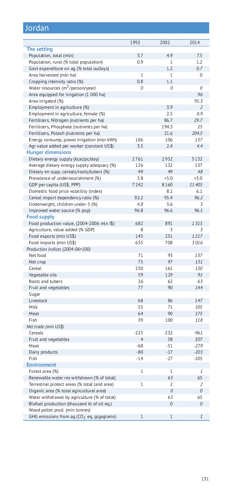
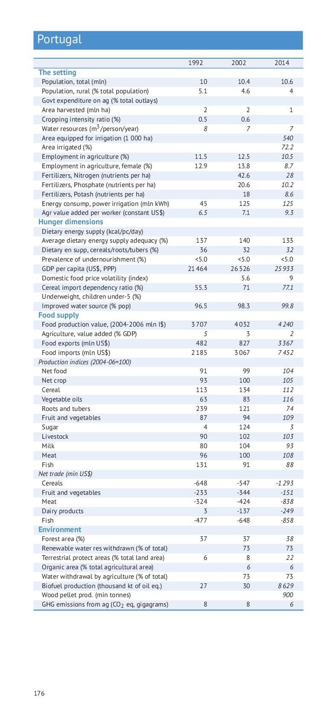

You should see the pdf on the left and a text editor on the right.
As you add new rows, please remove same number of empty rows BELOW your text not the mess the formatting below your comments!
Select for pdf either Page Fit or Page width to match with the comments
| Document | Comments |
|---|---|
|   |